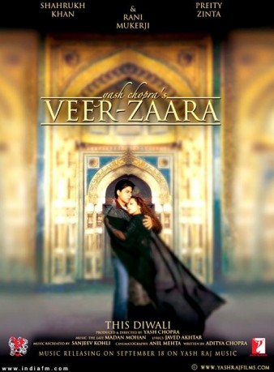

#570 Veer und Zaara - Die Legende einer Liebe
Alternativ: Veer-Zaara
 
 IMDB-Wertung: 7.9 / 10
IMDB-Wertung: 7.9 / 10  Metascore: 67
Metascore: 67 
Veer Pratap Singh (Shah Rukh Khan) is an officer and pilot in the Indian Air Force who one day meets a beautiful Pakistani heiress, Zaara Hayaat Khan (Preity Zinta), as she travels to a small Indian village to scatter the ashes of one of her family's loyal servants. Veer has family in the village, and while most Indians show no affection for Pakistanis, his aunt and uncle are willing to take Zaara in for the night. It isn't long before Veer finds himself falling for her; however, Veer learns that Zaara is engaged to another man, Raza (Manoj Bajpai), a cruel and humorless Pakistani. A friend of Zaara contacts Veer and tells him that Zaara wants out of her engagement and has strong feelings for him, but when he comes to her rescue, matters take a turn for the worse and Veer winds up in jail. Twenty years later, Veer is still behind bars, and finds that his case is being given a new trial, but while he has a new chance at freedom, he discovers his lawyer will be going up against a state ...
Jahr: 2004
Dauer: 192 Minuten
FSK:
Land: Indien Studio: Rapid Eye MoviesTonspuren:
Untertitel: Deutsch,
Auflösung: 720p (1280x544) Größe: 4884 MB
Genre: Drama, Familie, Musical, Liebe
Regisseur: Yash Chopra
Drehbuch: Aditya Chopra, Aditya Chopra, Aditya Chopra
Soundtrack: Sanjeev Kohli, Madan Mohan
Darsteller:
 Shah Rukh Khan als Veer Pratap Singh
Shah Rukh Khan als Veer Pratap Singh- Preity Zinta als Zaara Hayaat Khan
- Rani Mukerji als Saamiya Siddiqui
- Divya Dutta als Shabbo
 Boman Irani als Jahangir Hayaat Khan
Boman Irani als Jahangir Hayaat Khan Anupam Kher als Zakir Ahmed
Anupam Kher als Zakir Ahmed Amitabh Bachchan als Chaudhary Sumer Singh, Special Appearance
Amitabh Bachchan als Chaudhary Sumer Singh, Special Appearance- Hema Malini als Maati, Special Appearance
- Manoj Bajpayee als Razaa Shirazi, Special Appearance
- Gurinder Singh als
- Kiron Kher als Mariam Hayaat Khan
- Zohra Segal als Bebe
- S.M. Zaheer als
- Tom Alter als
- Akhilendra Mishra als Jailor
- Arun Bali als
- Gurdas Mann als
- Rushad Rana als
- Vinod Negi als
- Balwant Bansal als
- Rajesh Jolly als
- Anup Kanwal Singh als
- Kanwar Jagdish als
- Dev K. Kantawall als
- Vicky Ahuja als
- Ranjeev Verma als
- Chandni Jas Keerat als
- Sanjay Singh Bhadli als
- Kulbir Baderson als
- Shivaya Singh als
- Huzeifa Gadiwalla als
- Vishal Om Prakash als
- Amir Zadey als
- Syed Firdaus als
- Manish Arora als
- Banwarhlal Jhol als
- Darshan Aulakh als
- Jitendra Bhardwaj als
- Pankaj Raina als
Datei: X:\2004(N-Z)\Veer und Zaara - Die Legende einer Liebe (2004, FSK, 1280x544).mkv seit 10.03.2015
Festplatte: HD 2003-2004-2005(A-F)
 Es gibt insgesamt 54 Filme in der Gruppe '2004(N-Z)'
Es gibt insgesamt 54 Filme in der Gruppe '2004(N-Z)'